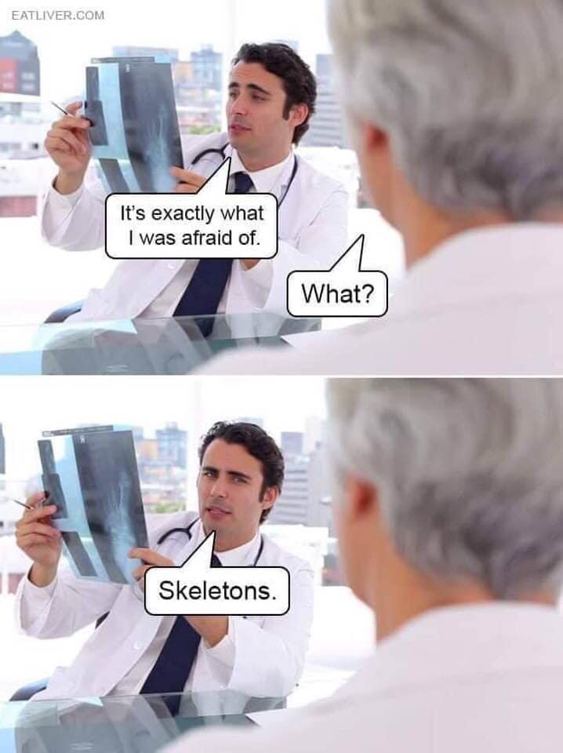

Robert Strzelecki
Tel. +48 513-738-434
E-mail: pracownia@preparatyka-kostna.pl
Nip: 9542716320
Regon: 385037312
E-mail: pracownia@preparatyka-kostna.pl
Nip: 9542716320
Regon: 385037312
Pytania o renowację proszę kierować na adres mailowy, wraz ze zdjęciami preparatu do renowacji. W przypadku prośby o identyfikację czaszki, wymagane są 3 zdjęcia: z profilu, z przodu i z góry. Wszystkie zdjęcia muszą być zrobione prostopadle do czaszki. Identyfikacja jest oczywiście bezpłatna.